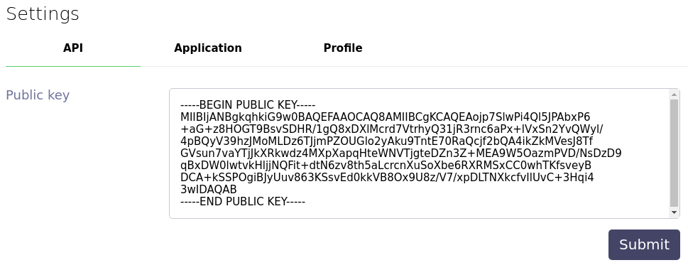

The purpose of this proof of concept is to demonstrate the technical feasibility and usefulness of a LGO markets web frontend.
This client-side web app interact with the HTTP/WebSocket API provided by LGO. Due to technical limitations, the web app can't connect to LGO directly. It has to use a proxy that handle authentication to LGO. Fortunately, the LGO team has built a proxy that encapsulate encryptions keys and requests signature to target LGO API.
Therefore, to connect to LGO via this web frontend, you have to install the LGO proxy on your computer, set up an access key in the LGO desktop app and launch the proxy with your access key as a parameter each time you want to access the LGO exchange. Please follow the detailed set up guide that will assist you in the process.
Because all requests sent to LGO go through the proxy and are signed by the private key you created when you have installed the proxy, you don't have to plug in your Ledger to access the LGO exchange.
Before starting the set up process, you have to:
Clone the lgo-proxy repository and follow the instruction in the README to install it. Then initialize the proxy by following the "Initialize" section.
When you initialized the LGO proxy, the "init" command should have returned a public key. If you have not saved this key, you can retrieve it with this command:
node ./lib/main info \
--signer-library-path <softhsm_library_path> \
--signer-pin <your_pin>
Open the LGO desktop app, go to the settings and copy Copy this public key to the corresponding field:

After submitting, write down the given access key.
Run the following command:
node ./lib/main start \
--signer-library-path <softhsm_library_path> \
--signer-pin <your_pin> \
--access-key <your_access_key>
And you are done! Each time you want to use the web app, you have to have the LGO proxy running.